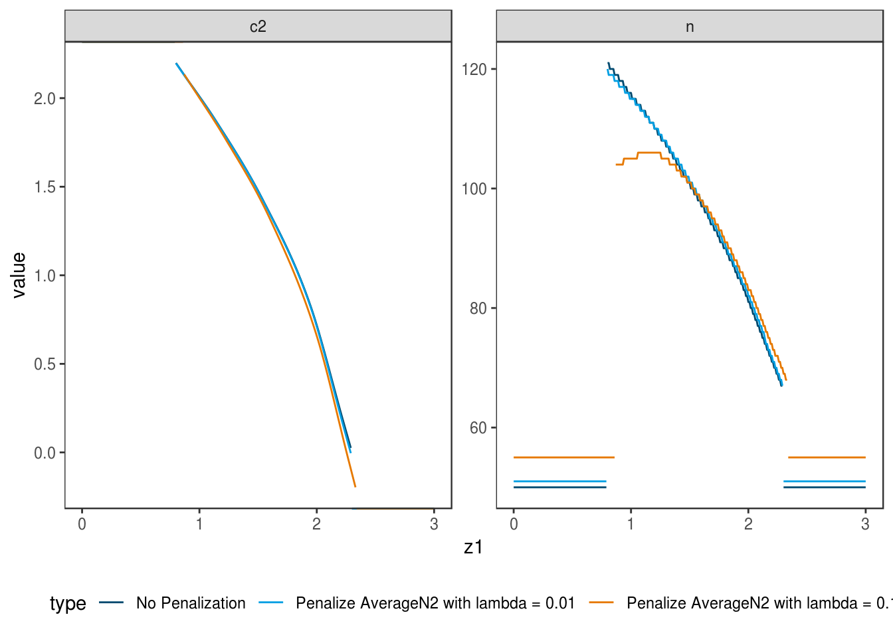

6 Scenario V: Single-arm design, medium effect size
6.1 Details
In this scenario an alternative effect size of \(\delta = 0.3\) with
point prior distribution is investigated.
This smaller effect size should lead to larger sample sizes than
in scenario I.
The null hypothesis is \(\delta \leq 0\).
Currently, adoptr only supports normal distributed data what is widely spread
in the development of adaptive designs.
6.1.1 Data distribution
One-armed trial with normally distributed test statistic
datadist <- Normal(two_armed = FALSE)6.1.2 Null hypothesis
The null hypothesis is \(\mathcal{H}_0:\delta \leq 0\)
H_0 <- PointMassPrior(.0, 1)6.1.3 Prior assumptions
A point mass prior with probability mass on \(\delta = 0.3\) is assumed.
prior <- PointMassPrior(.3, 1)6.2 Variant V-1, sensitivity to integration order
6.2.1 Objective
Expected sample size under the respective prior is minimized, i.e., \(\boldsymbol{E}\big[n(\mathcal{D})\big]\).
ess <- expected(ConditionalSampleSize(datadist, prior))6.2.2 Constrains
The type one error rate is controlled at \(0.025\) on the boundary of the null hypothesis.
toer_cnstr <- expected(ConditionalPower(datadist, H_0)) <= .025Power must be larger than \(0.8\).
pow_cnstr <- expected(ConditionalPower(datadist, prior)) >= .86.2.3 Initial Design
A fixed design for these parameters would require 176 subjects per group. We use the half of this as initial values for the sample sizes. The initial stop for futility is at \(c_1^f=0\), i.e., if the effect shows in the opponent direction to the alternative. The starting values for the efficacy stop and for \(c_2\) is the \(1-\alpha\)- quantile of the normal distribution.
init_design <- function(order) {
TwoStageDesign(
n1 = ceiling(pwr::pwr.t.test(d = .3, sig.level = .025, power = .8, alternative = "greater")$n) / 2,
c1f = 0,
c1e = qnorm( 1 - 0.025),
n2 = ceiling(pwr::pwr.t.test(d = .3, sig.level = .025, power = .8, alternative = "greater")$n) / 2,
c2 = qnorm(1 - 0.025),
order = order
)
}6.2.4 Optimization
The optimal design is computed for three different integration orders: 5, 8, and 11.
opt_design <- function(order) {
minimize(
ess,
subject_to(
toer_cnstr,
pow_cnstr
),
initial_design = init_design(order),
opts = opts
)
}
opt1 <- lapply(c(5, 8, 11), function(x) opt_design(x))## Warning in minimize(ess, subject_to(toer_cnstr, pow_cnstr), initial_design
## = init_design(order), : initial design is infeasible!
## Warning in minimize(ess, subject_to(toer_cnstr, pow_cnstr), initial_design
## = init_design(order), : initial design is infeasible!
## Warning in minimize(ess, subject_to(toer_cnstr, pow_cnstr), initial_design
## = init_design(order), : initial design is infeasible!6.2.5 Test cases
Check if the optimization algorithm converged in all cases.
iters <- sapply(opt1, function(x) x$nloptr_return$iterations)
print(iters)## [1] 2044 4660 8826testthat::expect_true(all(iters < opts$maxeval))Check type one error rate control. Due to numerical issues we allow a realtive error of \(1\%\).
sim_toer <- function(design) {
simdata <- simulate(
design,
nsim = 10^6,
dist = datadist,
theta = .0,
seed = 42
)
return(list(
toer = mean(simdata$reject),
se = sd(simdata$reject) / sqrt(nrow(simdata))
))
}
tmp <- sapply(opt1, function(x) sim_toer(x$design))
df_toer <- data.frame(
toer = as.numeric(tmp[1, ]),
se = as.numeric(tmp[2, ])
)
rm(tmp)
testthat::expect_true(all(df_toer$toer < .025 * 1.01))
df_toer## toer se
## 1 0.024978 0.0001560581
## 2 0.024955 0.0001559881
## 3 0.024951 0.0001559759Check the power constraint. For numerical reasons we allow a realtive error of \(1\%\).
sim_pow <- function(design) {
simdata <- simulate(
design,
nsim = 10^6,
dist = datadist,
theta = .3,
seed = 42
)
return(list(
pow = mean(simdata$reject),
se = sd(simdata$reject) / sqrt(nrow(simdata))
))
}
tmp <- sapply(opt1, function(x) sim_pow(x$design))
df_pow <- data.frame(
power = as.numeric(tmp[1, ]),
se = as.numeric(tmp[2, ])
)
rm(tmp)
testthat::expect_true(all(df_pow$pow > 0.8 * (1 - .01)))
df_pow## power se
## 1 0.799817 0.0004001374
## 2 0.799668 0.0004002490
## 3 0.799646 0.0004002655Check expected sample size under the prior.
sim_ess <- function(design) {
simdata <- simulate(
design,
nsim = 10^6,
dist = datadist,
theta = .3,
seed = 42
)
return(list(
n = mean(simdata$n1 + simdata$n2),
se = sd(simdata$n1 + simdata$n2) / sqrt(nrow(simdata))
))
}
tmp <- sapply(opt1, function(x) sim_ess(x$design))
df_ess <- data.frame(
n = as.numeric(tmp[1, ]),
se = as.numeric(tmp[2, ])
)
rm(tmp)
df_ess## n se
## 1 70.98114 0.02437353
## 2 70.99017 0.02438000
## 3 70.99167 0.024379976.3 Variant V-2, utility maximization
6.3.1 Objective
In this case, a utility function consisting of expected sample size and power is minimized.
pow <- expected(ConditionalPower(datadist, prior))
obj <- function(lambda) {
expected(ConditionalSampleSize(datadist, prior)) +
(-lambda) * pow
}6.3.2 Constrains
The type one error rate is controlled at \(0.025\) on the boundary of the null hypothesis. Hence, the previous inequality can still be used.
6.3.3 Initial Design
The previous initial design with order \(5\) is applied.
6.3.4 Optimization
The optimal design is computed for two values of \(\lambda\): 100 and 200.
opt2_design <- function(lambda) {
minimize(
obj(lambda),
subject_to(
toer_cnstr
),
initial_design = init_design(5),
opts = opts
)
}
opt2 <- lapply(c(100, 200), function(x) opt2_design(x))## Warning in minimize(obj(lambda), subject_to(toer_cnstr), initial_design =
## init_design(5), : initial design is infeasible!
## Warning in minimize(obj(lambda), subject_to(toer_cnstr), initial_design =
## init_design(5), : initial design is infeasible!6.3.5 Test cases
Check if the optimization algorithm converged in all cases.
iters <- sapply(opt2, function(x) x$nloptr_return$iterations)
print(iters)## [1] 3378 3024testthat::expect_true(all(iters < opts$maxeval))Check type one error rate control for both designs via simulation. Due to numerical issues we allow a realtive error of \(1\%\).
tmp <- sapply(opt2, function(x) sim_toer(x$design))
df_toer <- data.frame(
toer = as.numeric(tmp[1, ]),
se = as.numeric(tmp[2, ])
)
rm(tmp)
testthat::expect_true(all(df_toer$toer < .025 * 1.01))
df_toer## toer se
## 1 0.025022 0.0001561919
## 2 0.024971 0.0001560368Check if the power of the design with higher \(\lambda\) is larger.
testthat::expect_gte(
evaluate(pow, opt2[[2]]$design),
evaluate(pow, opt2[[1]]$design)
)Finally the three designs computed so far are plotted together to allow comparison.

6.4 Variant V-3, n1-penalty
In this case, the influence of the regularization term N1() is investigated.
6.4.1 Objective
In this case, a mixed criterion consisting of expected sample size and \(n_1\) is minimized.
N1 <- N1()
obj3 <- function(lambda) {
ess + lambda * N1
}6.4.2 Constrains
The inequalities from variant V.1 can still be used.
6.4.3 Initial Design
The previous initial design with order \(5\) is applied.
6.4.4 Optimization
The optimal design is computed for two values of \(\lambda\): 0.05 and 0.2.
opt3_design <- function(lambda) {
minimize(
obj3(lambda),
subject_to(
toer_cnstr,
pow_cnstr
),
initial_design = init_design(5),
opts = opts
)
}
opt3 <- lapply(c(.05, .2), function(x) opt3_design(x))## Warning in minimize(obj3(lambda), subject_to(toer_cnstr, pow_cnstr),
## initial_design = init_design(5), : initial design is infeasible!
## Warning in minimize(obj3(lambda), subject_to(toer_cnstr, pow_cnstr),
## initial_design = init_design(5), : initial design is infeasible!6.4.5 Test cases
Check if the optimization algorithm converged in all cases.
iters <- sapply(opt3, function(x) x$nloptr_return$iterations)
print(iters)## [1] 2222 2222testthat::expect_true(all(iters < opts$maxeval))Check if the n1 regularizer of the design with higher \(\lambda\) is lower.
testthat::expect_lte(
evaluate(N1, opt3[[2]]$design),
evaluate(N1, opt3[[1]]$design)
)
testthat::expect_lte(
evaluate(N1, opt3[[1]]$design),
evaluate(N1, opt1[[1]]$design)
)Finally the three designs computed so far are plotted together to allow comparison.

6.5 Variant V-4, n2-penalty
In this case the average over \(n_2\) is penalized by the predefined score
AverageN2.
6.5.1 Objective
In this case, a mixed criterion consisting of expected sample size and average of \(n_2\) is minimized.
avn2 <- AverageN2()
obj4 <- function(lambda) {
ess + lambda * avn2
}6.5.2 Constrains
The inequalities from variant V.1 can still be used.
6.5.3 Initial Design
The previous initial design with order \(5\) is applied.
6.5.4 Optimization
The optimal design is computed for two values of \(\lambda\): 0.01 and 0.1.
opt4_design <- function(lambda) {
minimize(
obj4(lambda),
subject_to(
toer_cnstr,
pow_cnstr
),
initial_design = init_design(5),
upper_boundary_design = get_upper_boundary_design(init_design(5), c2_buffer=3),
opts = opts
)
}
opt4 <- lapply(c(.01, .1), function(x) opt4_design(x))## Warning in minimize(obj4(lambda), subject_to(toer_cnstr, pow_cnstr),
## initial_design = init_design(5), : initial design is infeasible!
## Warning in minimize(obj4(lambda), subject_to(toer_cnstr, pow_cnstr),
## initial_design = init_design(5), : initial design is infeasible!6.5.5 Test cases
Check if the optimization algorithm converged in all cases.
iters <- sapply(opt4, function(x) x$nloptr_return$iterations)
print(iters)## [1] 1952 1530testthat::expect_true(all(iters < opts$maxeval))Check if the average \(n_2\) regularizer of the design with higher \(\lambda\) is lower.
testthat::expect_lte(
evaluate(avn2, opt4[[2]]$design),
evaluate(avn2, opt4[[1]]$design)
)
testthat::expect_lte(
evaluate(avn2, opt4[[1]]$design),
evaluate(avn2, opt1[[1]]$design)
)Finally the three designs computed so far are plotted together to allow comparison.
